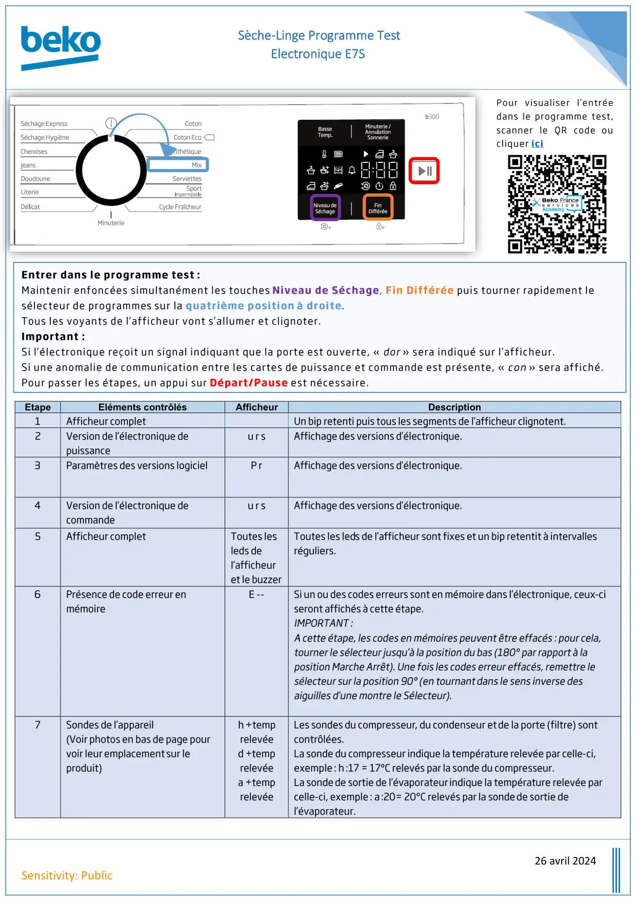
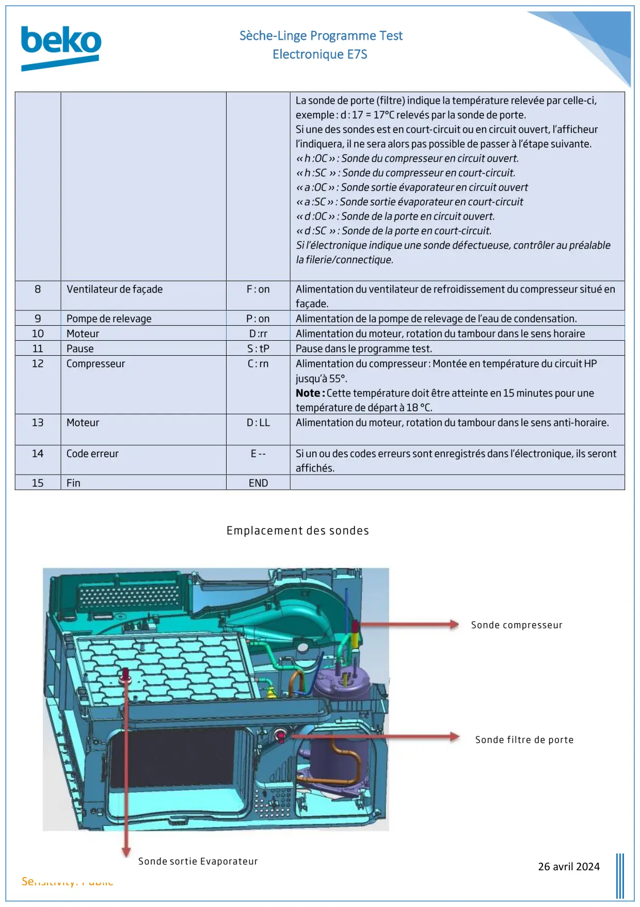
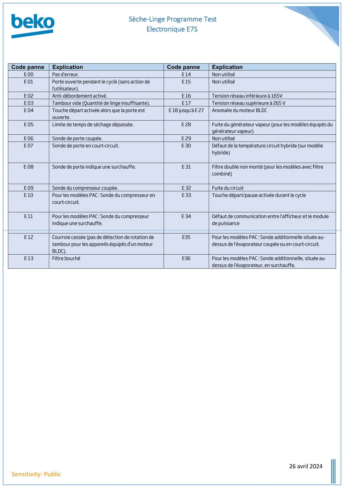

Prog Test seche linge Electronique E7

Sèche-Linge Programme TestElectronique E7S26 avril 2024Sensitivity: PublicEtapeEléments contrôlésAfficheurDescription1Afficheur completUn bip retenti puis tous les segments de l’afficheur clignotent.2Version de l’électronique depuissanceu r sAffichage des versions d’électronique.3Paramètres des versions logicielP rAffichage des versions d’électronique.4Version de l’électronique decommandeu r sAffichage des versions d’électronique.5Afficheur completToutes lesleds del’afficheuret le buzzerToutes les ledsde l’afficheur sont fixes et un bip retentit à intervallesréguliers.6Présence de code erreur enmémoireE--Si un ou des codes erreurs sont en mémoire dans l’électronique, ceux-ciseront affichés à cette étape.IMPORTANT :A cette étape, les codes en mémoires peuvent être effacés : pour cela,tourner le sélecteur jusqu’à la position du bas (180° par rapport à laposition Marche Arrêt). Une fois les codes erreur effacés, remettre lesélecteur sur la position 90° (en tournantdans le sens inverse desaiguilles d’une montre le Sélecteur).7Sondes de l’appareil(Voirphotos en bas de page pourvoir leuremplacementsur leproduit)h+temprelevéed+temprelevéea +temprelevéeLes sondes du compresseur, du condenseur etde la porte (filtre) sontcontrôlées.La sonde du compresseur indique la température relevée par celle-ci,exemple: h:17 = 17°C relevés par la sonde du compresseur.La sondede sortie de l’évaporateurindique la température relevée parcelle-ci, exemple: a:20= 20°C relevés par la sondede sortie del’évaporateur.Entrer dans le programme test:Maintenir enfoncées simultanément les touchesNiveau de Séchage,Fin Différéepuis tournerrapidementlesélecteurde programmessur laquatrième positionà droite.Tous les voyants de l’afficheur vont s’allumer et clignoter.Important :Si l’électronique reçoit un signal indiquant que la porte est ouverte, «dor» sera indiqué sur l’afficheur.Si une anomalie de communication entre les cartes de puissance et commande est présente, «con» sera affiché.Pour passer les étapes, un appui surDépart/Pauseest nécessaire.Pour visualiser l’entréedans le programme test,scanner le QR codeoucliquerici
1 / 3
Sèche-Linge Programme TestElectronique E7S26 avril 2024Sensitivity: PublicLa sonde de porte (filtre) indique la température relevée par celle-ci,exemple: d: 17 = 17°C relevés par la sonde de porte.Si une des sondes est en court-circuit ou en circuit ouvert, l’afficheurl’indiquera, il ne sera alors pas possible de passer à l’étape suivante.«h:OC»: Sonde du compresseur en circuit ouvert.«h:SC»: Sonde du compresseur en court-circuit.«a:OC»: Sondesortie évaporateuren circuit ouvert«a:SC»: Sondesortie évaporateuren court-circuit«d:OC»: Sonde de la porte en circuit ouvert.«d:SC»: Sonde de la porte en court-circuit.Si l’électronique indique une sonde défectueuse, contrôler au préalablela filerie/connectique.8Ventilateur de façadeF: onAlimentation du ventilateur de refroidissement du compresseur situé enfaçade.9Pompe de relevageP: onAlimentation de la pompe de relevage de l’eau de condensation.10MoteurD:rrAlimentation du moteur, rotation du tambour dans le sens horaire11PauseS: tPPause dans le programme test.12CompresseurC: rnAlimentation du compresseur: Montée en température du circuit HPjusqu’à 55°.Note:Cette température doit être atteinte en 15 minutes pour unetempérature de départ à 18 °C.13MoteurD: LLAlimentation du moteur, rotation du tambour dans le sens anti-horaire.14Code erreurE--Si un ou des codes erreurs sont enregistrés dans l’électronique, ils serontaffichés.15FinENDEmplacement des sondesSonde compresseurSonde filtre de porteSondesortieEvaporateur
2 / 3
Sèche-Linge Programme TestElectronique E7S26 avril 2024Sensitivity: PublicCode panneExplicationCode panneExplicationE 00Pas d’erreur.E 14Non utiliséE 01Porte ouverte pendant le cycle (sans action del'utilisateur).E 15Non utiliséE 02Anti-débordement activé.E 16Tension réseau inférieure à 165VE 03Tambour vide (Quantité de linge insuffisante).E 17Tension réseau supérieure à 265 VE 04Touche départ activée alors que la porte estouverte.E 18 jusqu’à E 27Anomalie du moteur BLDCE 05Limite de temps de séchage dépassée.E 28Fuite du générateur vapeur (pour les modèles équipés dugénérateur vapeur)E 06Sonde de porte coupée.E 29Non utiliséE 07Sonde de porte en court-circuit.E 30Défaut de la température circuit hybride (sur modèlehybride)E 08Sonde de porte indique une surchauffe.E 31Filtre double non monté (pour les modèles avec filtrecombiné)E 09Sonde du compresseur coupée.E 32Fuite du circuitE 10Pour les modèles PAC: Sonde du compresseur encourt-circuit.E 33Touche départ/pause activée durant le cycleE 11Pour les modèles PAC: Sonde du compresseurindique une surchauffe.E 34Défaut de communication entre l’afficheur et le modulede puissanceE 12Courroie cassée (pas de détection de rotation detambour pour les appareils équipés d’un moteurBLDC).E35Pour les modèles PAC: Sonde additionnelle située au-dessus de l’évaporateur coupée ou en court-circuit.E 13Filtre bouchéE36Pour les modèles PAC: Sonde additionnelle, située au-dessus de l’évaporateur, en surchauffe.
3 / 3